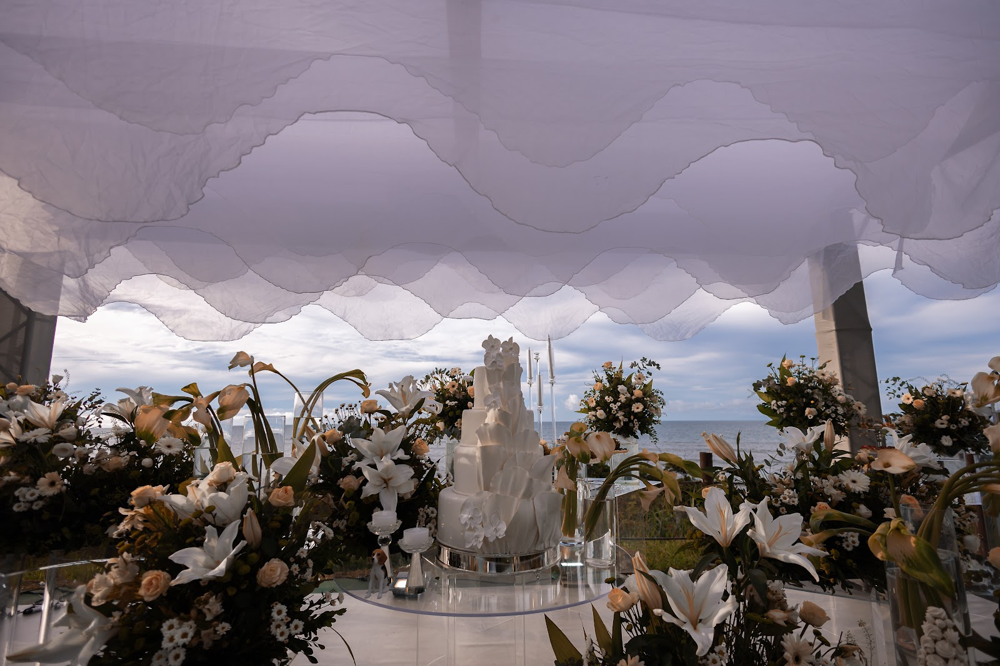

Flores, buquê e condução do grande dia num só time, do primeiro esboço ao último minuto da festa.
Pedir um projeto de decoraçãoCerimônia e festa, com projeto autoral.
Flores da estação, escolhidas para a sua paleta.
Projeto pensado para o clima e o lugar.
Uma equipe que acolhe e acalma os noivos até o último minuto.
A gente orienta com sinceridade sobre o que é viável, considerando clima, estação e local, e registra cada escolha antes da montagem.

“O lema deles é ‘meu melhor sempre’ e eles fazem jus ao lema.”
Noiva · avaliação no GoogleResponda 5 perguntas e mande para a nossa equipe o começo do seu projeto.
“Orientando com sinceridade sobre o que era viável, considerando fatores como clima, flores da estação e todos os desafios de um casamento ao ar livre.”
Noiva · Google“Sem palavras pro trabalho impecável do Josiel... a minha decoração e meu buquê.”
Noiva · Google“O lema deles é ‘meu melhor sempre’ e eles fazem jus ao lema.”
Noiva · GoogleWhatsApp: (85) 99185-1330
Endereço: R. Manuel Nunes, 90 · Antônio Bezerra, Fortaleza - CE